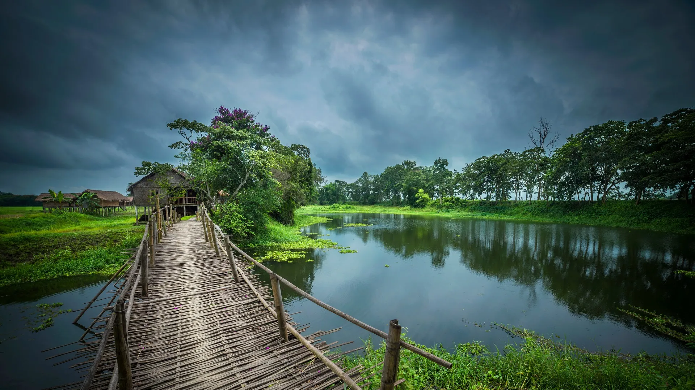

Majuli is the world's largest river island, located on the Brahmaputra River in Assam. This unique destination is a hub of Assamese Neo-Vaishnavite culture and offers a glimpse into traditional island life.
Majuli is not just geographically unique but also culturally rich. The island is home to numerous satras (monasteries) that preserve ancient traditions of dance, music, and art. The serene river views and simple village life make it a peaceful retreat.
- Satras (monasteries) - especially Kamalabari and Auniati Satras
- Traditional mask-making villages
- Pottery and weaving workshops
- Raas Mahotsav festival in November
- Bird watching and sunset views over the Brahmaputra
October to March is ideal. Avoid monsoon season as the island experiences flooding and erosion.
Take a ferry from Jorhat (the nearest major town). The ferry ride itself is an experience, taking about 1-2 hours. Jorhat has good road and rail connectivity from Guwahati.